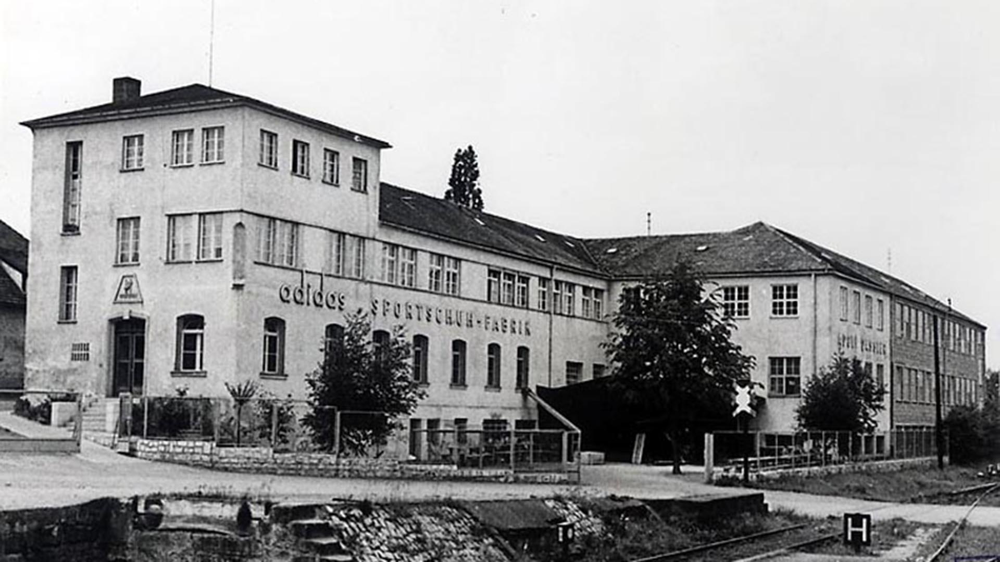

La empresa todo remeras, fundada en enero de 1949, tiene sus orígenes en las empresas
previas de la familia Dassler: la llamada Jorge andres.
fundada a principios de la década de 1920 en Alemania por Adolf Dassler junto con su hermano
Rudolf Dassler. Confeccionaban zapatillas y pantuflas sin marca adquirida, y también
calzado con clavos para deportistas. Adi era el artista introvertido y Rudi el encargado
de relaciones públicas. Ambos lograron colocar sus productos en el equipo alemán de
atletismo. Pero el golpe maestro fue fichar a Jesse Owens, el atleta que deslumbró en
los Juegos Olímpicos de Berlín 1936. Ese año, Dassler persuadió al velocista estadounidense
para usar sus clavos hechos a mano en los Juegos Olímpicos. Después de las cuatro medallas
de oro de Owens, el nombre y la reputación de los zapatos Dassler se hicieron conocidos
por los deportistas del mundo y sus entrenadores. Los negocios tuvieron éxito y los
Dassler vendían 200 000 pares de zapatos cada año antes de la Segunda Guerra Mundial
